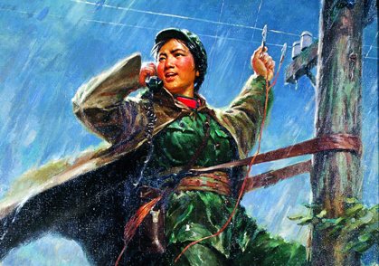

我是海燕

这件作品的创作过程和艺术成就，都很典型地反映了“文革”美术创作 的时代特征：深入基层生活以收集素材，集思广益以提炼主题， 突出和讴歌主要英雄的典型形象。画面上这位在暴风雨中检修通讯 线路的女解放军战士，犹如勇敢搏击风雨的海燕；作品的题目 《我是“海燕”》更是这一作品画题中的亮点——它既是话务兵的联络 暗号，又有女战士是暴风雨中的海燕的寓意。在1973年发表的一篇题 为《暴风雨中的“海燕”》的评论文章中说：“天色的阴暗，暴雨的倾注， 雷电的闪光等，都描绘得真实、自然，给人物形象以有力的烘托。恶劣的 天气所构成的艰苦环境，与人物镇定自若、勇敢乐观的神情和姿态，形成 了鲜明的对比。经过作者精心刻画的面部，在冷色调的天空衬托下，显得 格外响亮突出。同时还运用了虚实对比，使画面层次分明，主体突出。 例如把人物面部的轮廓描绘得特别清晰，明暗对比强烈集中。”这些评论 话语所表述的正是“文革”美术创作的典型审美理想。